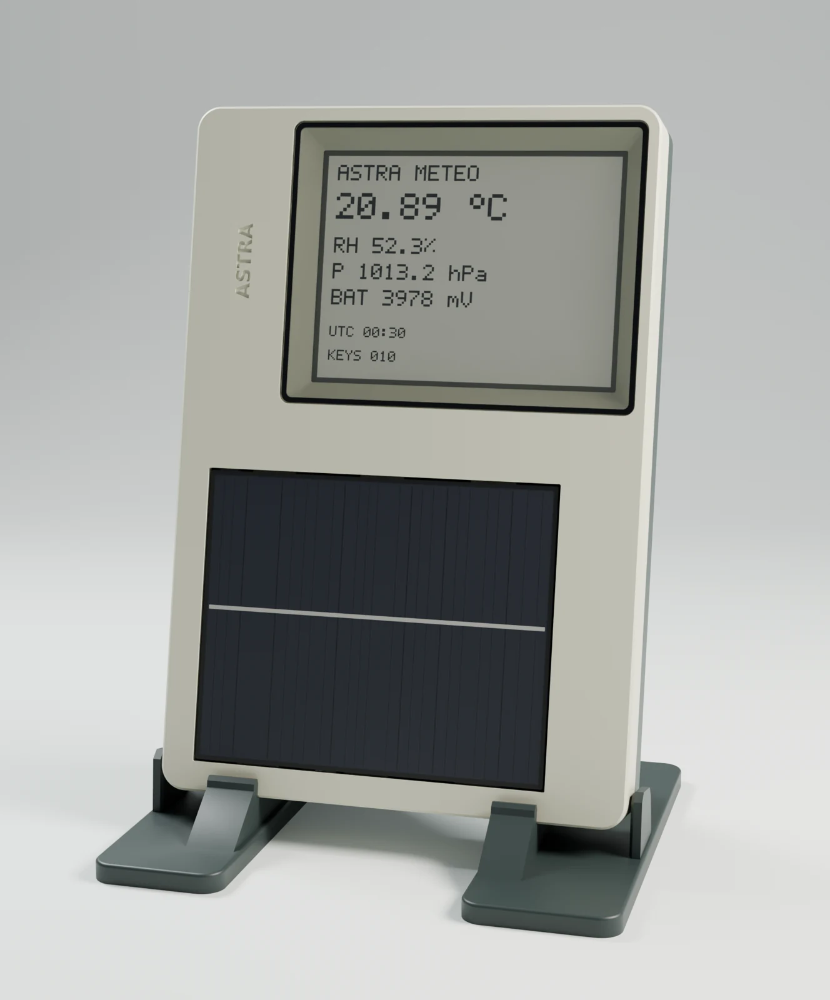

How I set it up
I wanted to see how far I could get with a list of parts and almost no PCB experience. I told ChatGPT what I needed in plain language and asked it to write a prompt for Codex. I then ran that prompt as a Codex goal, with GPT-6 Astra at maximum reasoning effort, access to the computer, the internet and Autodesk Fusion through MCP. The agent could look up a part, draw it, open the drawing and change its mind.
I asked for a two-layer, 1 mm board with every component on top and at most 4.1 mm above the board. The brief called for a weather sensor, radio, solar charging, USB-C and a 4.2-inch e-paper display. I left the dimensions and exact orderable parts to the agent. Eight subagents helped with the board, including separate layout, firmware and review work.
Power, radio and the board
The solar panel is rated at 5 V and 230 mA at its maximum power point. It feeds an SPV1050 energy harvester. A TPS2116 selects solar or USB, giving USB priority. Both go through the same BQ24074 charger to a protected 250 mAh LiPo. The battery temperature circuit can inhibit charging. USB-C supplies power only. Seven pogo contacts provide access for programming and debugging.
The source changeover looked straightforward on the schematic. The simulation used TI’s model of the TPS2116. With solar power available, the USB input fell from 5.25 V to 3.55 V in 200 µs. In all three runs, the switch output dipped to about 3.88 V, below the charger’s input regulation threshold. The simulation covered the switch alone. The bench plan therefore calls for watching the charger and battery rails during an actual switchover. Starting on solar alone is another open test.
The PCB layout measures 112 × 84 mm. The nRF54L15-QFAA sits inside an Ebyte E73-2G4M08S1F radio module with its own crystals and antenna. Checking the module drawing moved four ground pads by 0.30 mm. In the display circuit, the stencil opening for inductor L301 was only 0.025 mm from the nominal outline of transistor Q301. Moving L301 by 0.35 mm gave its second pad 0.375 mm of clearance from Q301 at nominal dimensions, or 0.305 mm with the largest specified transistor body.

Waking a display that forgets
The picture stays on the glass when power is removed, but the SSD1683 controller loses its working memory. A partial update needs both the old and the new image. The firmware stores the last confirmed scene in the microcontroller’s nonvolatile RRAM. When a partial refresh is possible after wake-up, the firmware rebuilds the old and new 400 × 300 monochrome frames and sends 15,000 bytes for each. If power failed midway through a refresh, it requests a full redraw.
The PCF85063A clock runs on the always-on supply while the main rail is off. The design uses its quarter-hour alarm, the TPL5111 and the RT6160 regulator to power the 3.3 V rail for a BME280 reading. The first choice of clock was out of stock. The selected part is PCF85063AT/AY. The 24-pin display connector also needed checking against the exact black-and-white V2 panel. Pins 1 and 4 stay open and pin 5 is VSH2.
Tests on a computer checked the next alarm for every possible starting second of the day (86,400 cases) and simulated power loss while saving display state. Three clean firmware builds produced byte-for-byte identical HEX files. The room-temperature energy model gives 0.707 mAh per day including assumed self-discharge, for 16 full and 80 partial updates. At +5 °C with the battery at 3.35 V, charging inhibited and all 96 updates using a full refresh, the model gives 7.886 mAh per day including self-discharge. Actual current, ghosting and legibility need a meter and a real panel.

The enclosure I forgot to ask for
My first prompt stopped at the board. In the second I asked for a printable enclosure and a visual inspection. The case body measures 134 × 196 × 24 mm in CAD, or 25.10 mm thick including the rear buttons at rest. The stand tilts it 12° from vertical. The display and solar panel share the front. Three keys operate from the back, and five openings let air reach the sensor. I spotted the board through the USB-C opening in the model, so we adjusted the case.


Opening the back also moves the battery cable. The service guide says to lift the cover parallel to the board by at most 12 mm before disconnecting the battery. The board and display glass then move together through 20 mm of travel, with the flex cable still connected. The print set contains 11 STL parts. For the complete set, the slicer estimated 10 h 48 min 08 s and 239.17 g of PETG. I haven’t printed or assembled it.
What passed, and what needs a bench
The design has 92 electrical nets, 210 vias and 214 drilled holes. The manufacturing check matched the holes against the reopened drill files. Copper, mask, paste, assembly placement, antenna clearance and access to the test pads were checked separately. The final design passed all 36 automated manufacturing checks and all 35 mechanical checks on the CAD model.
Fusion’s board design-rule check reported zero findings. KiCad found no violations or unconnected items on the imported board. Fusion’s schematic check reported 35 power-pin naming warnings (ERC 104). The review traces all 35 from the symbol pin to the PCB pad and its net. Six deliberately damaged design variants tested the checks themselves, including a mirrored module, crossed battery pins and a trace on an inner layer of the two-layer board. The verifier rejected all six.
The prototype has yet to be built. All 15 tests on the bench worksheet are marked “Not run”. First power-up, changeover under load, charging across temperature, sleep current, radio range, visible partial refresh and USB fit all still need bench work. The qualification plan gives the setup and acceptance thresholds. If you review the files, I’d especially like to hear which part you would put on the bench first.
Time and token costs
Codex recorded the elapsed time from the start of each prompt to its final response. The total excludes the gaps between prompts and counts parallel work by subagents only once.
I ran this on a $200/month subscription. The three prompts used about half my weekly allowance by my estimate. For an API comparison, I counted each recorded model response once, including the subagents. At the standard Astra rates recorded on November 15, 2026, a million tokens cost $10 for new input, $1 for cached input and $50 for output. The reasoning tokens are already included in output.
| Stage | Elapsed time | Calls | New input | Cache reads | Output | USD |
|---|---|---|---|---|---|---|
| Board | 1 h 46 min 36 s | 2,452 | 3,873,137 | 370,936,448 | 994,702 | 459.40 |
| Enclosure | 1 h 06 min 50 s | 1,495 | 2,080,431 | 221,413,632 | 702,439 | 277.34 |
| Enclosure revision | 2 h 00 min 37 s | 2,697 | 3,257,702 | 419,919,104 | 1,090,795 | 507.04 |
| Total | 4 h 54 min 03 s | 6,644 | 9,211,270 | 1,012,269,184 | 2,787,936 | 1,243.78 |
How the work unfolded
0 – 40 min0 – 200 USD
1. Circuit board1 h 46 min 36 s · $459.40
Parts, display memory and radio19 min 46 s$106.18
Checked stock, changed the RTC, chose the radio module and corrected missing component labels in the first schematic export.
First routing pass and firmware build16 min 59 s$105.76
Fusion revealed tracks as narrow as 0.09 mm. In parallel, three clean builds produced byte-for-byte identical HEX files.
Track widths, pins and ground copper20 min 12 s$99.58
Reworked routing and checked the pin assignments against firmware. An independent Gerber inspection found isolated ground copper.
Ground connections and 3D assembly14 min 17 s$63.05
Reworked the ground connections and reopened the populated board in STEP. At maximum package size, transistor Q301 could overlap the stencil opening for inductor L301.
Final layout and manufacturing checks15 min 37 s$64.45
Adjusted component spacing, reran Fusion DRC and reconstructed all 92 nets from the exported copper.
Reimport and handover19 min 47 s$20.38
Reimported the F3Z archive in Fusion, checked the schematic, PCB and 3D links, then verified the delivery files.
2. Enclosure1 h 6 min 50 s · $277.34
Measure the display and lay out the front5 min 15 s$21.43
Checked the manufacturer’s drawing, reserved the full 36.7 mm width of the display flex and positioned the solar panel below the screen.
Model and slice the enclosure13 min 40 s$55.03
Built the first 11 printable parts, including the stand and keys. The slicer revealed unsupported areas, so the cover guides became ramps.
Glass clearance, stand and assembly order19 min 25 s$90.92
Moved a screw post away from the glass, lengthened the enclosure by 2 mm, checked insertion into the stand and worked out when to connect the display flex.
Tolerances and solar wiring14 min 24 s$63.48
Checked the glass and flex through their 20 mm assembly travel, then checked where the wire insulation ended relative to the solder pad.
Print files and assembly guide14 min 06 s$46.48
Checked the exports used for printing and assembly and packaged the models and illustrated guide.
3. Enclosure revision2 h 0 min 37 s · $507.04
Reproduce the issue and reshape the opening15 min 12 s$72.19
Found the socket nearly 10 mm behind the wall. The revised recess hid the board from the angle in my screenshot.
Plug clearance and the cover seam30 min 56 s$164.51
Checked full insertion of a 13 × 7 mm plug in CAD, sliced the front again and added an internal rib where an oblique view exposed the solar panel.
Oblique views and board tolerances37 min 04 s$156.65
Narrowed the sides of the recess and tested the board at its mounting limits. The revised wall blocked all 41 previously identified sight lines.
Print paths and mask alignment25 min 57 s$89.38
Checked the wall in the slicer, plug travel in the CAD assembly with the stand fitted, and how far the mask could shift. Added an inspection template and sliced all 11 parts.
Final checks and delivery11 min 28 s$24.30
Collected the Fusion views, geometric checks and updated assembly kit. The final report covers 277 viewing directions on the model.
Each prompt starts at 0:00:00. The checkpoints come from the project log. Each stage names the main activity in that interval. Its cost includes every recorded response, including parallel work by subagents. Durations and timestamps are each rounded to the nearest second. Dollar amounts are API estimates rounded to the nearest cent.
The prompts
Translated from Romanian.
What I asked ChatGPT
1. ChatGPT’s reply and my first prompt for Codex
2. The enclosure
3. Final enclosure adjustment
Project files
The full download contains the editable board and schematic, library, STEP assemblies, firmware source and HEX, manufacturing exports, workshop files and test records. The case models use STEP and the included CAD generator. The Markdown documents are available in English and Romanian. The illustrated workshop guide is in Romanian.
Project documentation
- Project overview
- Design journal
- Power and charging
- Electrical rule checks
- Manufacturing and assembly
- Radio and programming
- Wake, time and sensors
- E-paper display
- Prototype test plan
- Bring-up firmware
- Display bench tests
- Firmware journal
- Bench worksheet
- Enclosure review
- Connector mask
- Mask inspection
- Mask adjustment
- Board design costs